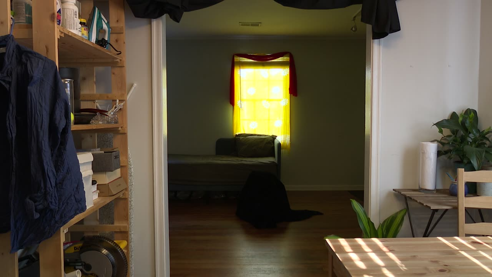

Tselem
Tselem
PubPub Link
https://nime.pubpub.org/pub/v1kq3bzq/draft?access=1iue6x2s
Project Description
Tselem is the latest in a series of performances featuring the CrackleMask. Tselem confronts latent eschatological belief systems in HCI through esoteric ritual. Eschatology refers to the study of apocalypse in theology, where apocalypse is not an ending, but a revelation of hidden truths that disrupt an existent social order. Eschatological belief systems are expressed in HCI through the notion that technological innovation will solve humanity’s problems. In the context of esoteric ritual, the CrackleMask serves as a conduit through which embodied histories of spaces may reveal themselves or even possess the performer.
The CrackleMask is a wearable instrument that implements Michael Waiswisz’s Cracklebox (Kraakdoos) as a mask form. The Cracklebox circuit takes advantage of the now obsolete LM709’s idiosyncrasies by connecting the LM709’s external frequency compensation, power, and output pins to touch and pressure sensitive contact points on human skin. The circuit produces a chaotic high frequency signal that is brought down to the audible range by using the human body’s capacitive and resistive properties.
Crackleboxes are usually implemented in box form with contact points placed on the top. The CrackleMask has contact points on a mask's exterior with a speaker turned inwards towards the user’s mouth, advantaging the mouth’s natural ability to act as a formant filter. The contact points mask's exterior require the performer to touch their face, generating a theatrical performance. A wireless microphone is installed inside the mask. The signal from the wireless microphone is sent to a computer running Supercollider for live processing.
The CrackleMask is currently in its second version. The first version was constructed from a flat piece of wood, flattening facial features in an aesthetically interesting but physically uncomfortable manner. The second version is constructed of plaster molded to fit the user's face.
Type of submission
Select one of the two options
Option 1: “New NIME” - traditional NIME music sessions aimed at showcasing pieces performed or composed with new interfaces for musical expression.
Program Notes
Tselem is a technologically mediated esoteric ritual that uses the CrackleMask rev2 as a conduit for the revelation of embodied histories in a given space through the performer. Tselem is the biblical Hebrew term for image and in certain contexts Gods’/’s image. In this context, Gods’/’s image may be thought of as a variable, whose value is set to the experiential manifestation of one’s own beliefs and related belief systems in relation to the space and the other’s own beliefs and related belief systems in relation to the space and the other’s own…
The Characters:
God/s
voice(s)
humans
Tselem
The Plot:
At some point in a story,
in this story, in that story,
perhaps his story, perhaps her story,
perhaps their story, perhaps history,
humans and God/s experienced each other
But over time, there emerged a gap between humans and God/s
(A/The) voice(s) became the path between God/s and humans
They could hear each other but no longer could they experience each other
The gap between (the/nil) voices(s) and God/s widened and became an abyss
The abyss became so wide that only the Tselem could travel between
(A/The) voice(s) were all but lost in the abyss
But the humans searched for the (A/The) voice(s) and found the Tselem
And Tselem became the path between God/s and humans
(A/The) voice(s) was/were all but lost in the abyss
Media

▶Ethics Statement
Accessibility
Tselem can be performed by a variety performers from different cultural backgrounds. The CrackleMask, albeit physically uncomfortable in its first iteration, provides access to musical participation no matter the perceived or self-perceived skill level of the user. Since the COVID-19 pandemic, it is not safe to share items that touch one’s face or are breathed into, so it is not recommended to share masks.
The Cracklebox circuit is fairly easy to implement, provided one has access to the parts required, a soldering iron, and a multimeter. The circuit schematic is readily available with a quick Google search. Even so, there are economic barriers preventing many people’s access to basic tools for prototyping electronics.
Inclusion
Tselem is a fundamentally personal piece featuring a fundamentally personal music technology artifact, what the author is calling the CrackleMask. This is one version of a music technology artifact that could have been produced by anybody with the tools (roughly $120-200: mediocre soldering iron and decent multimeter), the parts (roughly $60.00: obsolete op-amps purchased on eBay, an assortment of resistors and capacitors, a nine volt battery, plaster strips, snail tape, elastic, copper wire, protoboard, hot glue gun, and acrylic paint), and most importantly the money (at best we’re talking $260.00). $260.00 can mean the difference between eating for the month and paying rent. The CrackleMask is not a product. It is not bought or sold, and is willingly shared.
Sustainability
The CrackleMask is constructed of low energy sustainable materials and obsolete electronic components. Surplus waste is endemic to the electronics industry, and finding ways to implement and exhaust surplus supply of obsolete electronics is beneficial to the environment by slowing the accumulation of e-waste through the reuse of materials.
Sources of Funding
All versions CrackleMask have been entirely self-funded. The CrackleMask project has no affiliation with any academic institution or corporation of any sort. No sources have of financial support have been accepted for this project.